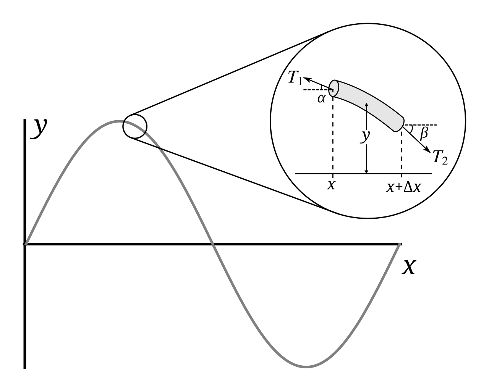

Fyzika kytarové struny
Vojtěch Černý, 1.1.2026
Ačkoliv zadáním práce je, podívat se pohledem oblasti našeho zájmu na fyziku, a bylo by tedy vhodnější o ní třeba zahrát písničku, podívám se naopak pomocí fyziky na vibrace (nejen) kytarové struny - jak vypočítáme její frekvenci; proč se dějí ta kouzla při podržení prstu nad některými místy a proč jsou pražce na hmatníku tam, kde jsou.
Jako první se podíváme na to, jak taková struna vibruje. Lehce přičichneme k diferenciálním rovnicím a nakonec odvodíme Mersennovu rovnici. Ale postupně.
Stojaté vlnění
Každé vlnění popisují, mimo jiné, jeho vlnová délka \(\lambda\), rychlost šíření \(v\) a frekvence \(f\) a v určitém bodě fáze \(\varphi\). Zamysleme se, kdy se na naší struně délky \(L\) se dvěma pevnými konci může dané vlnění udržet. Během odrazu o pevný konec se, na rozdíl od odrazu od volného konce, změní fáze vlny o 180° - z hřebenu se stane údolí a naopak.
Odaz od bla bla bla, dopsat
Když se potkají dvě sinusoidy pohybující se opačným směrem, interferují a vzniká tzv. stojaté vlnění. To je specifické tím, že se některé jeho body vůbec nepohybují - těm říkáme uzly - a jiné se hýbou až do maximální amplitudy - těm zase kmitny. Pro naši strunu platí, že se určitě nepohybují její konce. Je proto v zájmu našeho vlnění, aby v těchto bodech mělo uzly. Kdy to nastává?
Stojaté vlnění lambda bla bla bla, dopsat
Po jednom odrazu se vlna musí vrátit do počátečního bodu v o přesně 180° odlišné fázi, než byla vyslána, aby tam mohl vzniknout uzel. Po dalším odrazu se její fáze opět otočí a bude tedy pokračovat tak, jak začala. Musí tedy platit, že přesně po dvou délkách struny musí být ve stejné fázi, jako byla na začátku. Ve stejné fázi je vždy právě o celou vlnovou délku dál, musí proto platit, že \(\lambda\) dělí \(2L\).
\[n = \frac{2L}{\lambda}, \quad n \in \mathbb{N}\]
Stojaté vlnění n bla bla bla, dopsat
Určitě nezůstalo bez povšimnutí, že \(n + 1\) odpovídá počtu uzlů na struně. Sama od sebe nám totiž kytarová struna začne vibrovat tím nejjednodušším způsobem, kdy \(n = 1\). My jí v tom však můžeme zabránit - třeba tím, že přesně v její polovině, kde by měla mít největší amplitudu vibrací, nad ní podržíme prst. Vznikne tam tak další uzel a struna začne vibrovat s \(n = 2\). Přesně to se stane, když zahrajeme a podržíme prst nad 12. pražcem! Podobně tak můžeme podržet prst nad třetinami (přibližně 7. pražec), čtvrtinami (nad 5. pražcem) atd. Jak to souvisí s frekvencí a výsledným tónem si ukážeme níže, po odvození vztahu mezi frekvencí a vlnovou délkou.
Rychlost vlnění
Stále mějme strunu délky \(L\) a lineární hustoty \(\mu \). Na tu “zahrajeme”, takže začne vibrovat - začne se vychylovat od rovnovážné polohy.
Kliknutím a potažením na strunu zahrajete, i se zvukem :).
Uvažujme rychlost, kterou se bude tato námi vyvolaná vlna po struně šířit. Zavedeme kartézské souřadnice tak, že struna je natažena ve směru osy \(x\) a vychyluje se ve směru osy \(y\). Zaměřme se na krátký úsek délky \(\Delta x\) (jelikož je výchylka malá, uvažujeme, že to odpovídá i délce struny). Síla působící na tento úsek ve směru osy \(x\) musí být 0, jelikož struna zrychluje pouze ve směru osy \(y\). Označíme sílu, kterou je tento úsek z jedné strany ve směru osy \(x\) napínán, \(T\).
{kind=link}
Působí-li na začátku našeho úseku síla \(T_1\) a vlákno svírá v tomto bodě se směrem osy \(x\) úhel \(\alpha\), tak platí, že velikost síly \(T\) je \(T_{1x} = T_1 \cos \alpha \approx T \). Stejně tak na opačném konci lze \(T\) přepsat jako \(T_{2x} = T_2 \cos \beta \approx T \).
Podobně, rozložíme-li tyto síly na jejich komponenty ve směru osy \(y\), dostáváme
\[T_{1y} = T_1 \sin \alpha\] \[T_{2y} = T_2 \sin \beta \]
Z obrázku vidíme, že mají opačný směr - jejich výslednicí bude jejich rozdíl. Dosadíme pomocí druhého Newtonova zákona vztah pro zrychlení a hmotnost, za kterou dosazujeme součin délky \(\Delta x\) a lineární hustoty \(\mu\).
\[F_y = T_{1y} - T_{2y} =T_1 \sin \alpha -T_2 \sin \beta = \Delta m a_y \approx \mu \Delta x a_y\]
Podělíme obě strany \(T\), přičemž využijeme předchozích vztahů pro složku ve směru osy \(x\). Můžeme si tak vybrat ten se shodným úhlem jako v \(\sin\) a dostat tak vždy funkci \(\tan\).
\[\frac{T_1 \sin \alpha}{T_1 \cos \alpha} - \frac{T_2 \sin \beta}{T_2 \cos \beta} = \tan \alpha - \tan \beta = \frac{\mu \Delta x}{T} a_y\]
Jak víme, \(\tan\) je protilehlá přepona ku přilehlé. Zvolíme-li na koncích vlákna malý úsek na ose \(x\) a jemu odpovídající změnu souřadnice \(y\) (o kolik stoupne či klesne struna za ten daný úsek), tak právě jejich poměr bude hledaná hodnota \(\tan\). Tato definice však odpovídá i derivaci \(y\) podle \(x\) v daném bodě, čehož využijeme k přepisu vztahu. Vzdálenost struny od rovnovážné polohy \(y\) je závislá jak na souřadnici \(x\), tak na čase \(t\). Jedná se proto o funkci více proměnných a my dostáváme parciální derivace. Také ekvivalentně nahradíme zrychlení ve směru osy \(y\) za druhou derivaci \(y\) podle času. Přesuneme \(\Delta x\) na levou stranu a pohlídáme zneménka, aby seděla vzhledem k definici úhlů.
\[ \frac{1}{\Delta x}\left(\left.\frac{\partial y}{\partial x}\right|^{x+\Delta x}-\left.\frac{\partial y}{\partial x}\right|^x\right)=\frac{\mu}{T}\frac{\partial^2 y}{\partial t^2} \]
Nyní už pouze zbývá si všimnout, že jsme na levé straně dostali další derivaci. Když se bude \(\Delta x\) postupně blížit k nule, tak počítáme, jak se derivace \(y\) podle \(x\) změní za krátký úsek, děleno délkou toho úseku. To je však přesně druhá derivace \(y\) podle \(x\). Naše rovnice tak dostává konečnou podobu:
\[\frac{\partial^2 y}{\partial x^2} = \frac{\mu}{T} \frac{\partial^2 y}{\partial t^2}\]
Nojo, jenže co teď s tím? Kdybychom byli ostřílení v řešení diferenciálních rovnic, tak hned jásáme, protože na nás vypadla známá vlnová rovnice. Jelikož nám (nebo minimálně mně) tyto znalosti chybí, nezbývá nám nic jiného, než nějaké, ne nutně nejobecnější, řešení uhodnout. Zatím jsme se setkali se spoustou sinusoid, sestrojme tedy takovou, aby se v čase měnila s úhlovou rychlostí \(\omega\) a měla vlnovou délku \(\lambda\).
\[y(x, t) = \sin\left(\omega t + \frac{2\pi}{\lambda}x\right)\]
Zkusíme tedy spočítat parciální derivace:
\[\frac{\partial^2 y}{\partial x^2} = -\left(\frac{2\pi}{\lambda}\right)^2 \sin\left(\omega t + \frac{2\pi}{\lambda}x\right)\] \[\frac{\partial^2 y}{\partial t^2} = -\omega^2 \sin\left(\omega t + \frac{2\pi}{\lambda}x\right)\]
A následně dosadit do naší rovnice:
\[-\left(\frac{2\pi}{\lambda}\right)^2 \sin\left(\omega t + \frac{2\pi}{\lambda}x\right) = \frac{\mu}{T} \left(-\omega^2 \sin\left(\omega t + \frac{2\pi}{\lambda}x\right)\right)\]
Upravíme:
\[\frac{2\pi}{\lambda \omega} = \sqrt{\frac{\mu}{T}}\]
Nyní můžeme využít vztah mezi vlnovou délkou, frekvencí a rychlostí šíření vlnění:
\[v = f \lambda = \frac{\omega}{2\pi} \lambda\]
A už naposled dosadit:
\[v = \frac{\omega}{2\pi} \lambda = \sqrt{\frac{T}{\mu}}\]
Což je právě hledaný vztah pro rychlost šíření našeho vlnění. Ale nejen to, díky předchozímu vztahu dostaneme i popis frekvence.
Mersennův zákon
Výše odvozený vztah můžeme přepsat, aby v něm vystupovala frekvence a vlnová délka:
\[f = \frac{1}{\lambda}\sqrt{\frac{T}{\mu}}\]
Za vlnovou délku můžeme dosadit \(\lambda = \frac{n}{2L}\), jak jsme odvodili při rozebírání stojatých vln.
\[f = \frac{n}{2L}\sqrt{\frac{T}{\mu}}\]
Díky tomu vidíme, že frekvence je nepřímo úměrná délce struny. Také můžeme odpovědět na otázku, jak se změní frekvence, když necháme strunu kmitat nějakým jiným módem. Například podržíme-li prst nad 12. pražcem na kytaře, kdy \(n=2\), tak je frekvence dvojnásobná, což je interval oktávy.
S hudebními intervaly souvisí poslední věc, kterou bych chtěl na kytaře rozebrat - proč jsou pražce tam, kde jsou?